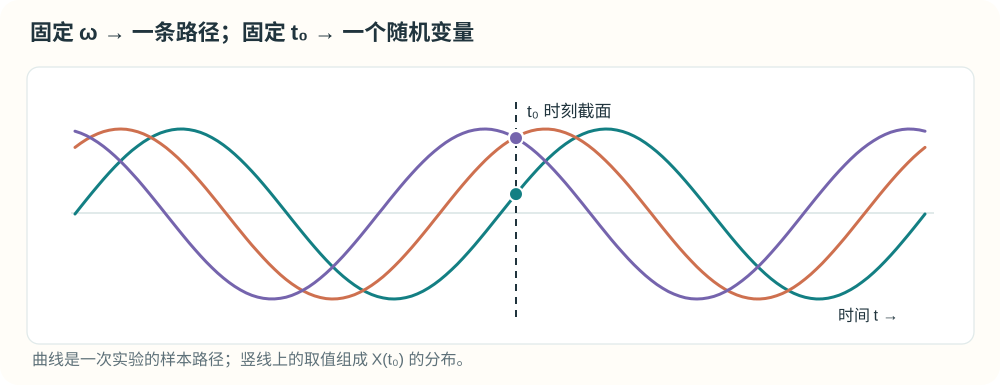
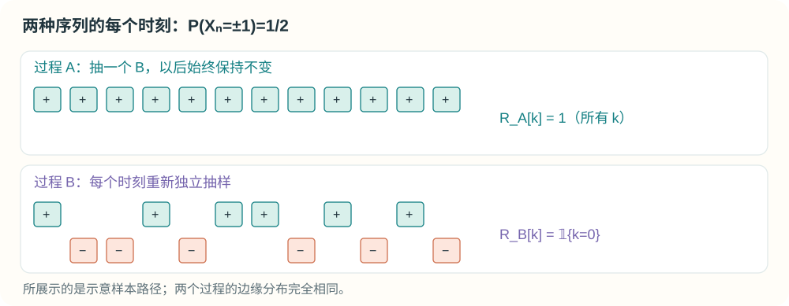
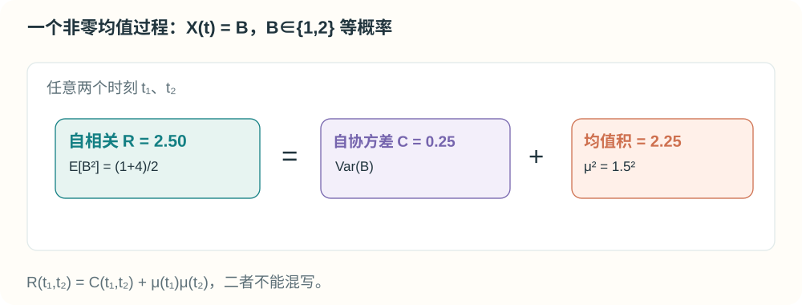
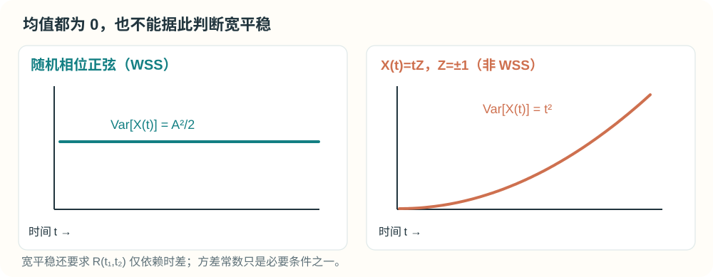

CHAPTER 06 · 随机过程与谱
随机信号的基本概念
一次观测为何只是随机过程的一条样本路径？为什么“每个时刻分布相同”仍无法确定信号怎样随时间变化？从集合、时间切片、相关函数推导走向平稳性与各态历经性。
- 区分随机过程模型、一次实现与固定时刻的随机变量
- 说明有限维分布为何比一阶分布包含更多时间依赖信息
- 计算均值、自相关和自协方差，并准确辨认 WSS 与各态历经性
同一台接收机的每次录音，究竟属于哪个对象？
给一台接收机连续记录 10 秒噪声，并在同样条件下重新采集多次。每一次记录都得到一条明确的时域波形，然而这些波形通常不同。把其中某条波形写作 x(t) 只是描述了一次实现；把所有可能的实验结果及其概率规律放在一起，才是一个随机过程 X(t)。
把随机变量提升为随机过程时，除了概率空间，还增加一个时间（或更一般的索引）集合 T。写作 X:T×Ω→ℝ。对每个固定 t，X(t,·) 是随机变量；对每个固定样本结果 ξ∈Ω，X(·,ξ) 是一条确定的样本路径。

术语避免混淆：信号处理文章经常把“随机信号”用于指随机过程，也有人将一次观测波形口头称作随机信号。形式化推导时必须区分模型 X(t,ξ) 与实际观测 x(t)，避免把单次测量当作总体期望。
为什么每个时刻的 PDF 不足以描述整个过程？
想象两个随机符号序列：过程 A 首次抽取一个公平符号 B∈{−1,+1}，后面所有时刻都等于 B；过程 B 在每个时刻重新独立抽取一个公平符号。两者在任何一个固定时刻的分布完全相同，但过程 A 总保持不变，过程 B 却可能每步跳变。

一阶分布 Ft(x)=P(X(t)≤x) 只描述一个时刻。任意选取 n 个时间点 t₁,…,tₙ，需要研究联合事件：
若所有有限维分布给定且满足相容性（删去变量后边缘一致、对指标重排时联合分布一致），在适当的形式化框架内，Kolmogorov 扩展定理保证存在具有这些有限维分布的过程。但这个定理本身不保证样本路径连续、可微或其他额外正则性。如果只拿到均值和协方差，通常无法完整识别非高斯过程；在联合高斯过程类中，均值与协方差才足以确定全部有限维分布。
图中两种随机符号过程，二阶统计量有多不同？
过程 A：X[n]=B，B 公平取 ±1。它的自相关 RA[k]=E[B²]=1，与时差 k 无关。过程 B：Y[n] 为各时刻独立的公平符号，RB[0]=1，非零整数 k 时 RB[k]=0。它们的“单个时刻方差”却都等于 1。
理论自相关；不使用单次样本的随机估计值。
同一随机符号保持不变：；各时刻独立：
均值函数、方差函数与两个容易混淆的“相关”
对实值、二阶矩存在的过程，均值 μX(t)=E[X(t)]；方差 Var(X(t)) 描述固定时刻的离散程度。涉及两个时刻时，自相关使用原始乘积，自协方差则先分别减去两个时刻的均值。
看一个极端却很有教育意义的过程：B 只取 1 或 2，各占 1/2；令 X(t)=B 对所有 t 都相同。此时 μ(t)=1.5、R(t₁,t₂)=E[B²]=2.5、C(t₁,t₂)=Var(B)=0.25。如果把 R 当成 Cov，就会把非零均值贡献 2.25 错算成随机波动。

复数基带的约定：对复值随机信号，常用 RX(t₁,t₂)=E[X(t₁)X*(t₂)]；第二个因子要取复共轭。把实值公式照搬到 I/Q 复信号会改变能量与频谱关系。
两个模型，把统计函数一步算清
例 A：随机相位正弦
设 X(t)=A cos(2πft+Θ)，其中 A 与 f 为固定常数，Θ~Uniform(0,2π)，且每次实验采样一次 Θ，实验期间保持不变。均值为 0。利用积化和差与相位积分，得到：
它只依赖时差 τ=t₁−t₂，而且均值恒定、有限二阶矩存在，因此是宽平稳（WSS）过程。均匀随机相位还使任何时间平移对应相位整体旋转，有限维分布不变，故在该模型下也严格平稳。它不是白噪声，因为非零时差的自相关并不普遍为 0。
例 B：幅度随时间增长的随机斜线
令 Z 公平取 ±1，X(t)=tZ，t≥0。它的均值始终为 0，但方差 t² 随时间增大，而 R(t₁,t₂)=t₁t₂ 并非单纯时差的函数。因此它不是宽平稳过程。均值常数只是平稳性的一部分，远远不够。

平稳性、各态历经性不是同一个概念
宽平稳（WSS）要求有限二阶矩、均值不随时间变化、RX(t₁,t₂) 只依赖 τ=t₁−t₂。严格平稳（SSS）要求任何有限维联合分布在统一平移时间后不变。若严格平稳且二阶矩存在，通常可推出 WSS；反过来，仅有均值与二阶相关的平移不变无法保证所有高阶联合分布不变。
各态历经性是另一个问题：能否用一条足够长的样本路径的时间平均恢复集合期望？本章的常值随机过程 X(t)=B（B∈{1,2} 等概率）是严格平稳也宽平稳的；但单条路径的时间平均恒为 1 或 2，不等于总体均值 1.5。它在均值意义下不是各态历经的。
| 性质 | 观察对象 | 容易误用的判断 |
|---|---|---|
| 相同一阶分布 | 每个固定时刻 | 不能确定跨时刻依赖 |
| WSS | 均值、自相关及二阶矩 | 不能推出高阶联合分布也平移不变 |
| 严格平稳 | 所有有限维分布 | 并不自动允许用单条路径估计总体均值 |
| 均值各态历经 | 时间平均是否等于集合均值 | 不同于平稳性本身 |
第 07–11 章会进一步讨论均方微积分、WSS、自相关性质、功率谱与各态历经性。前提写清楚后，再把时域的相关结构翻译到频域才不会出错。
直接验证：一个时刻的分布和两个时刻的相关
用离散求和积分近似随机相位模型的集合期望，同时用显式公式验证两种符号过程的相关；这里并不依赖随机采样。
from math import pi, cos, isclose
A, freq, t1, t2 = 2.0, 1.3, .7, 1.1
n = 2048
phases = [2*pi*k/n for k in range(n)]
mean_at_t1 = sum(A*cos(2*pi*freq*t1+p) for p in phases)/n
r_numeric = sum((A*cos(2*pi*freq*t1+p)) *
(A*cos(2*pi*freq*t2+p)) for p in phases)/n
r_formula = (A*A/2)*cos(2*pi*freq*(t1-t2))
assert abs(mean_at_t1) < 1e-12
assert isclose(r_numeric, r_formula, abs_tol=1e-12)
# independent ±1 signs: only zero lag correlation is one
r_iid = lambda k: 1 if k == 0 else 0
assert r_iid(0) == 1 and r_iid(3) == 0
自检：两个序列每个时刻都服从相同分布，是否有相同 PSD？
通常没有。相同的一阶分布不意味着自相关相同；在合适的 WSS 和频谱条件下，自相关决定 PSD，两者可能截然不同。
自检：样本路径的长时间平均为什么不一定等于总体平均？
因为需要各态历经性的额外条件。常值随机过程 X(t)=B 的时间平均就是 B 本身，无法从单次实现恢复 E[B]。
参考与核查依据
- MIT OpenCourseWare · Random Processes：随机过程、伯努利过程与跨时间统计。
- MIT OCW · Theory of Probability：Kolmogorov 一致性及分布构造所需的背景。
- ProbabilityCourse · Stationary Processes：严格平稳与宽平稳的定义和对比。
- ProbabilityCourse · Autocorrelation and PSD：相关函数与谱分析的连接。